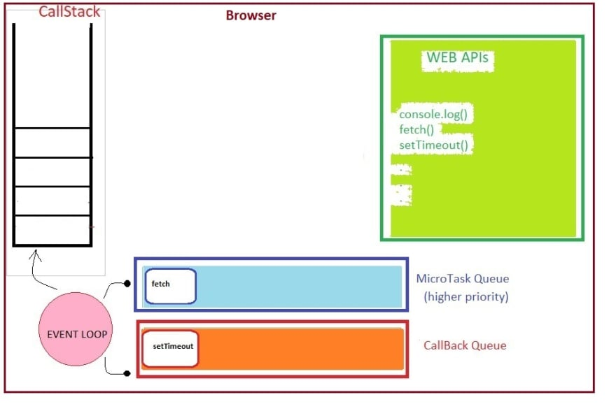

heading 1
heading 2
heading 3
heading 4
heading 5
heading 6
heading 7
heading 8
heading 9
difference between callback queue and microtask queue is
microtask queue me promises , fetch apis etc.... hote h
callback queue m setTimeout , setInterval , event callback aate h
Microtask queue high priority hoti h so phle microtask queue call stack m jata or uske bad call back queue execution hota hai
How promises works in bg

CallBack Queue and macroTask Queue is same